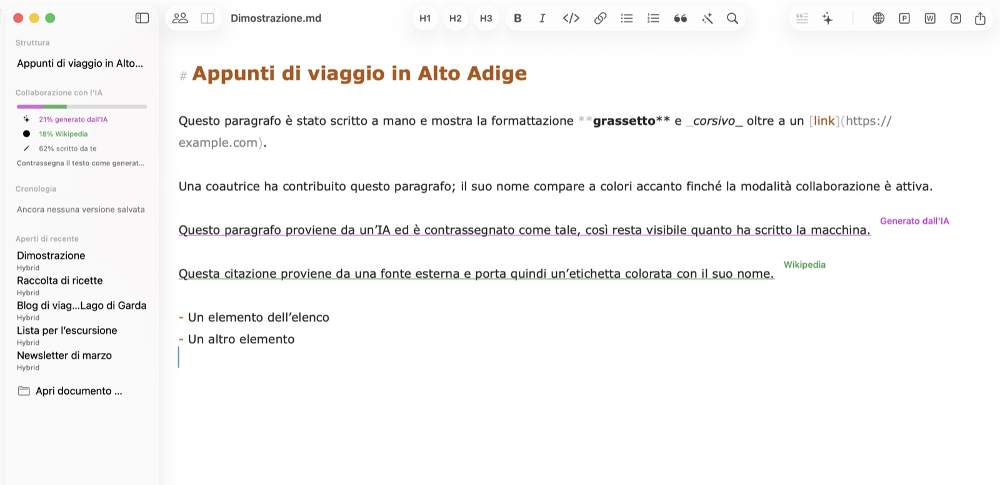
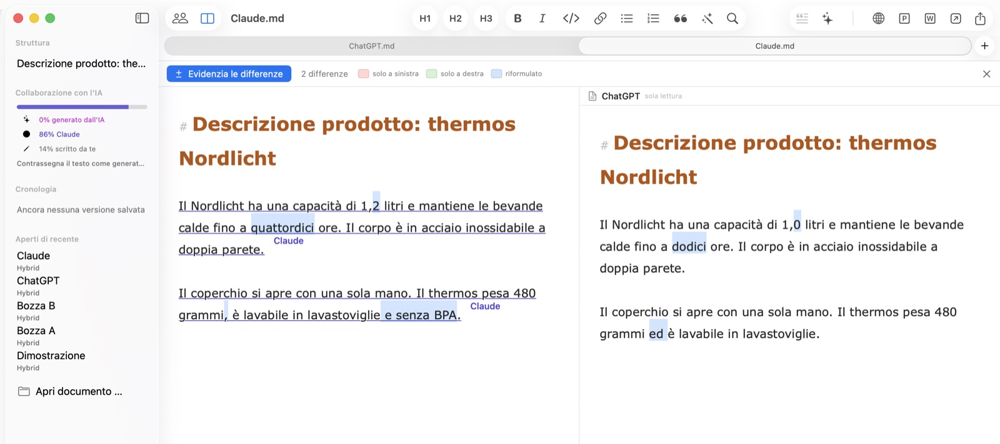
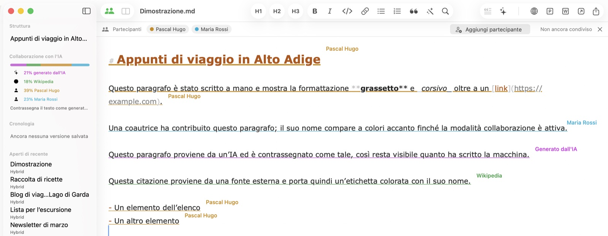
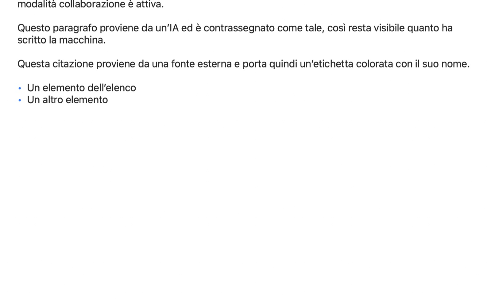

Pubblicazione online con un clic
Copia il documento come HTML formattato con immagini integrate — pronto da incollare in WordPress e altri CMS. Le immagini appaiono esattamente al loro posto, niente link rotti.
Hybrid per macOS
Hybrid registra da dove viene ogni passaggio: scritto da te, generato da un'IA, citato da una fonte con nome o aggiunto da un collega. Fatto per chi pubblica — PR, marketing, agenzie e redazioni.
In arrivo Hybrid arriverà presto su iPhone e iPad.

Ogni passaggio porta con sé la propria origine — e la mantiene quando salvi, condividi e scrivi a più mani. Il registro viaggia dentro un normale file .md che qualsiasi altro editor può aprire; le etichette fluttuano sopra il testo e non finiscono in nessun export.
Questo paragrafo l'hai scritto tu — tutto ciò che digiti conta automaticamente come tuo.
Questo passaggio viene da un'IA ed è marcato, così la parte della macchina resta visibile.Generato da IA
Questa citazione viene da una fonte esterna e porta il suo nome come piccola etichetta.Wikipedia
La promessa centrale: ciò che qualcuno ha contribuito resta attribuito a quella persona — anche se in seguito l'accesso viene revocato. La provenienza registra chi ha scritto, non chi ha il permesso adesso.
La stessa domanda è andata a due strumenti di IA e le risposte a prima vista sembrano uguali. Hybrid evidenzia esattamente dove differiscono e conta le differenze. Assegna a ogni risposta il nome del suo strumento come fonte: anche dopo la fusione saprai quale frase viene da quale.

Condividi un documento via iCloud Drive e ogni passaggio mostra il nome del suo autore come etichetta colorata. Le modifiche degli altri appaiono in pochi secondi, senza che cursore o scorrimento saltino. Si invita con la finestra di condivisione di Apple — Contatti, Mail o Messaggi.

Titoli, elenchi, tabelle vere e immagini integrate, resi come li vedranno i tuoi lettori. L'anteprima segue la digitazione dal vivo in una finestra propria — ideale per controllare un testo prima del CMS.

Copia il documento come HTML formattato con immagini integrate — pronto da incollare in WordPress e altri CMS. Le immagini appaiono esattamente al loro posto, niente link rotti.
Invia il testo con un clic a ChatGPT, Claude, Perplexity o a un'app a tua scelta. Marca i passaggi IA e leggi la parte di ogni partecipante nella barra laterale.
I documenti sono puri file .md che qualsiasi editor può aprire. Tutto ciò che Hybrid sa in più — provenienza, versioni, autori — viaggia in un unico commento invisibile.
Trascina una foto nel testo: viene ridimensionata, convertita e referenziata in Markdown. Un file CSV o Excel diventa una tabella formattata.
Hybrid salva stati intermedi mentre scrivi. Ogni stato si può rivedere e ripristinare — non si perde nulla, anche se cambi idea.
Blocca l'app subito o automaticamente dopo l'inattività. Bloccato significa bloccato: finestre nascoste, export disattivati — finché Touch ID non riapre.
Ovunque un testo nasca da più mani — umane e di macchina —, Hybrid tiene distinte le origini.
Scrivi comunicati stampa con il supporto dell'IA mantenendo ogni citazione verificabile. Quando chiedono cosa ha scritto un umano, il tuo documento ha la risposta — trasparenza come metodo, non come rimedio.
Tante penne, una sola voce. Vedi la parte di ciascuno, confronta le bozze fianco a fianco e consegna HTML pulito a qualsiasi CMS — l'intero flusso di contenuti sul tuo Mac.
Separa le tue parole dalle fonti e dai suggerimenti dell'IA. Le fonti con nome restano legate a ogni paragrafo — attraverso revisioni, versioni e scrittura condivisa.
I report scritti insieme all'IA hanno bisogno di una traccia verificabile. Hybrid registra chi — o cosa — ha scritto ogni passaggio, e il blocco Touch ID tiene chiuse le bozze riservate.
Confronta gli output dei modelli fianco a fianco, misura la parte di IA di un documento e conserva prompt e risultati come Markdown pulito — leggibile in ogni strumento.
Dal Markdown al CMS con un clic: HTML formattato con le immagini esattamente dove devono stare. In più, export in PDF, Word e Markdown puro.
Hybrid arriverà presto su iOS. Gli stessi documenti, la stessa provenienza — in tasca. Fino ad allora i tuoi file restano Markdown puro in iCloud Drive, leggibili su ogni dispositivo.
Hybrid è disponibile in nove lingue: italiano, inglese, tedesco, francese, spagnolo, portoghese, olandese, giapponese e cinese semplificato — e anche questo sito.
Hybrid per Mac — l'editor Markdown per le persone, l'IA e tutto ciò che pubblichi.
macOS 13 (Ventura) o successivo · Apple Silicon & Intel